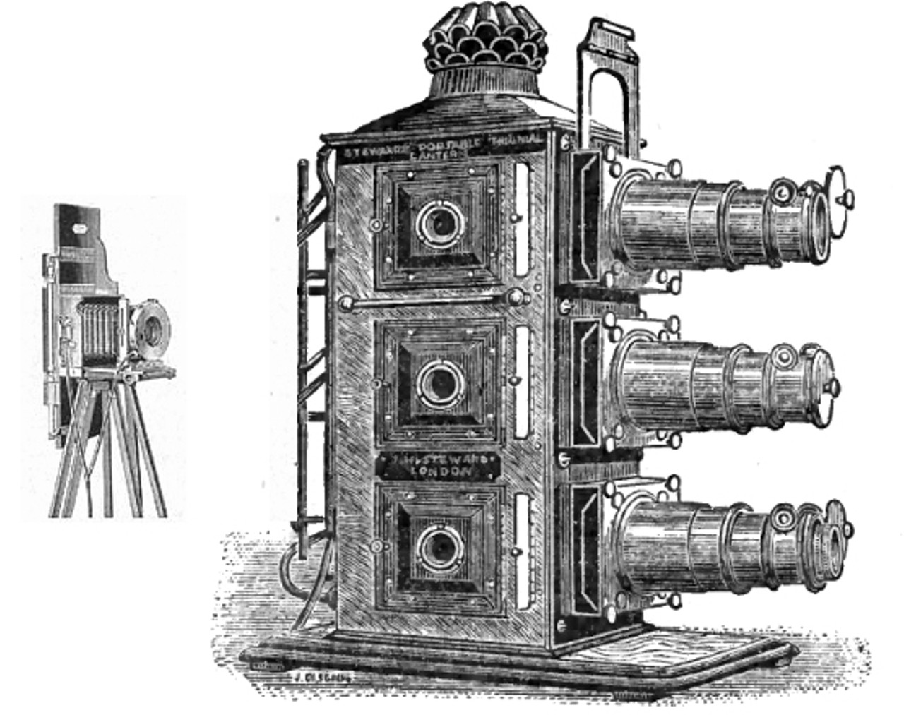
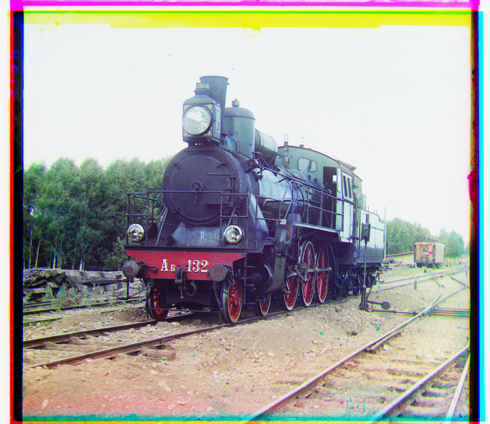
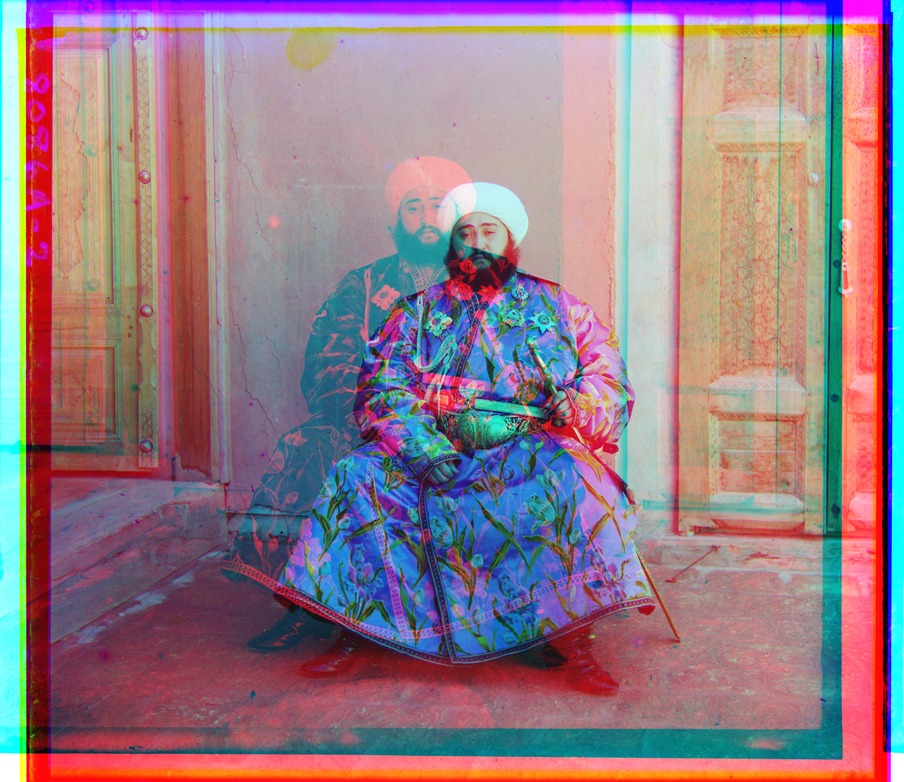
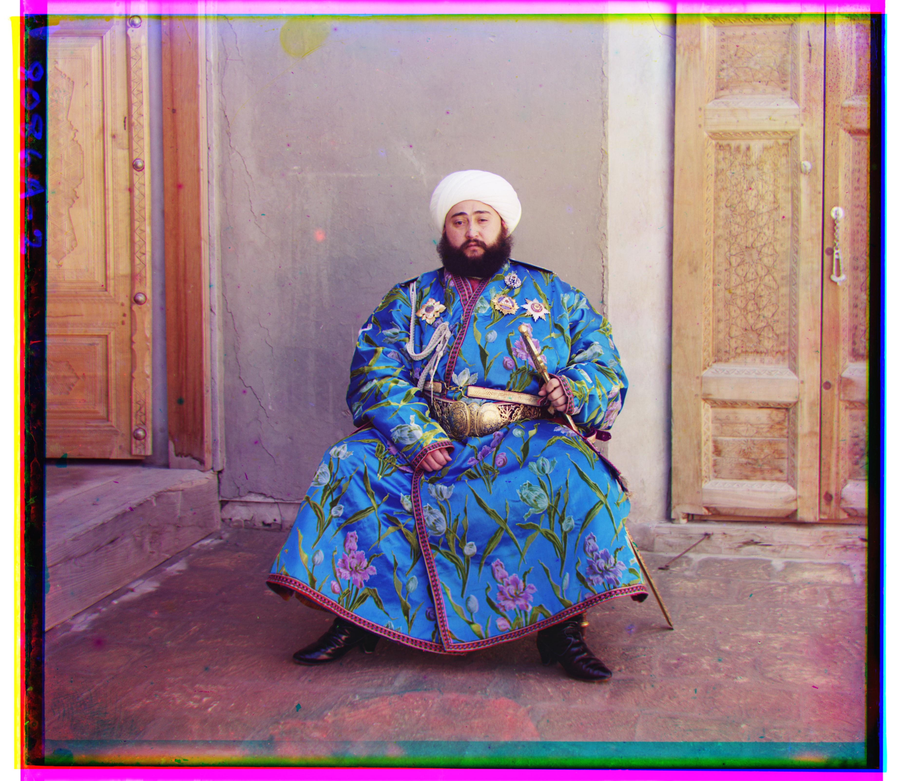
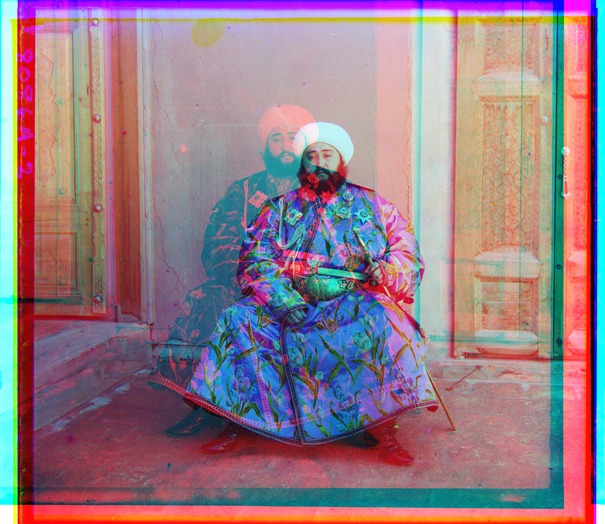
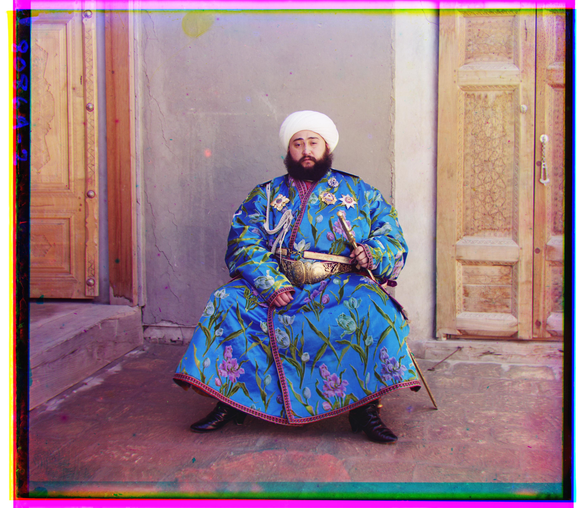
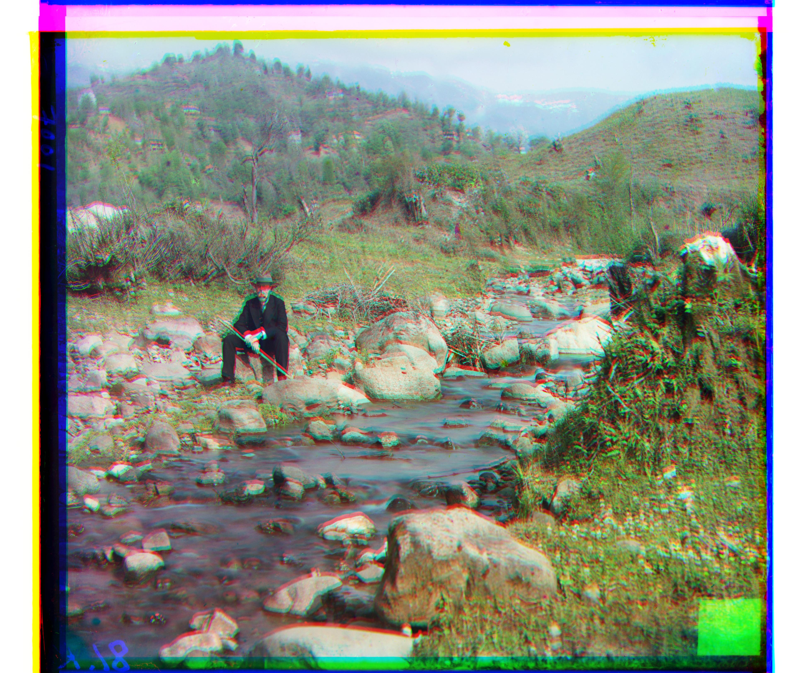
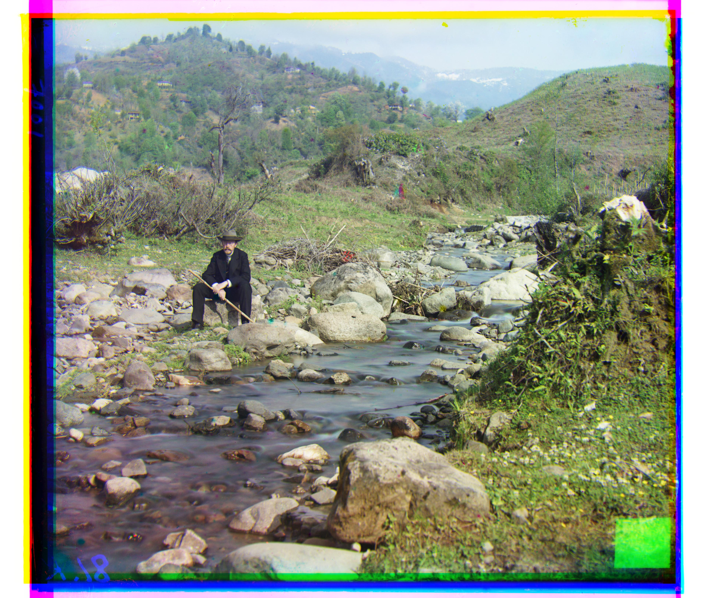
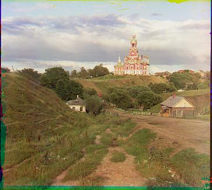
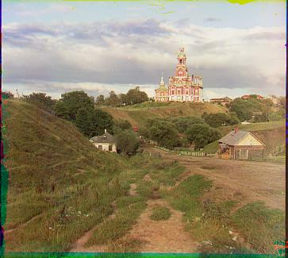

By: Alex Pan
Before the 20th century, color photography had not yet become widespread - developments in the field were still rudimentary, at best. Sergei Mikhailovich Prokudin-Gorskii (1863-1944), a Russian photographer, was the one responsible for spearheading work in color photography with his implementation of the Three-color principle.
Starting in 1907, he traveled through the Russian Empire, documenting the vast landscapes in color for the first time. Over 10,000 pictures were taken in the form of RGB glass plate negatives, which have luckily survived the years. Recently, the Library of Congress has digitized and hosted the images online here.
In this project, we will use image processing techniques to automatically colorize the glass plate images taken by Prokudin-Goskii. In each image, a special camera is used to record the scene with three exposures: a red, a green and a blue filter. The process of colorization is simple. We extract the three color channel images, lay them on top of each other, and align them so they form a single RGB color image. Here's an example of a camera and a glass plate image:

The most basic approach is to divide each image into thirds and directly place them on top of each other. As you can tell below, this doesn't always work out too well. The borders and angles between each filtered image cause discrepancies that result in a slightly misaligned final picture.

The easiest way to align the parts is to do an exhaustive search over a window of possible displacements, score each displacement, and find the displacement values with the best score. We arbitrarily choose the blue filter to be the base image, so we align the other two filters to it.
First, we crop out the outer parts of the image, because we don't want the borders to interfere with our alignments. For our purposes, a window of [-15, 15] pixels in both the x and y directions seemed to be large enough to find the corret alignment. A larger window is less computationally efficient, so we want it to be as small as possible. Two possible scoring metrics were considered: the Sum of Squared Distances (SSD), and the normalized cross-correlation (NCC). Both of these performed equally well, so we will use SSD for simplicity's sake.
Here's the same example as above, aligned using exhaustive search. As you can see, the clarity is much better.

As mentioned before, exhaustive search can get quite expensive as the window of possible displacements increases. For large images where correct alignments may be displaced by hunders of pixels, exhaustive search is much too slow.
An image pyramid represents the image at multiple scales, and the processing is done sequentially starting from the coarsest scale (smallest image). We recursively go down the pyramid to larger images, updating the estimate as we go. This allows us to try a very large window of displacements without manually calculating scores for each configuration.
Base Case: If the image is 400px by 400px or smaller, we use regular exhaustive search over a window of [-15, 15]. Otherwise, we resize the image by 1/2 and recursively call the function and apply changes found at a smaller scale. To account for small inaccuracies with resizing, we search over a [-5, 5] window in each middle layer.
Here's an example of a a large image being aligned with an image pyramid. It takes less than a minute to colorize, as opposed to the several minutes it would have taken to complete had we used exhaustive search.
As you can see from the glass plate image of Emir below (on the left), the brightness of each filter image is drastically different. In particular, the blue (top) filter is significantly brighter than the rest - Emir's robe is much brighter than his skin and appear almost white. Naturally, aligning the images to the blue filter doesn't work well. The SSD score is thrown off because of the brightness values, and the alignment does not work properly (shown in the middle). The solution to this is simple - align to a different filter other than blue. Running the same algorithm using green as the base filter produces a much better result (shown on the right).
 



Although not as drastic as the example of Emir before, the self portrait image also did not align as it should have (displayed on the right). My guess for why this happened is because of the color distribution of the image. The landscape is dense, mostly green, and has a lot of miniscule grass/foliage details. The blue filter most likely doesn't hold enough information to be able to align the two other colors to it properly, resulting in a slightly skewed image. Fortunately, this image can be fixed in the same way as Emir's image. Because the majority of the picture is green, we use green as the base image and align the other colors to it. The result is much nicer (shown left).
 A proper colorization involves more than just simple filter alignment and there are several factors to play around with to recreate the best image possible. Adjusting color levels, removing blemishes, adding contrast - these fine-tune adjustments can be done automatically as well.
One of the more notable features of the colorized images is the strange border around the edges, caused by misalignments and minute differences between filters in the original glass plate image.
I took two steps in attempting to automatically crop the borders out of the images. The pre-crop step crops out parts of the image where not all 3 of the color channels exist. When we use np.roll to shift images, we have overflow from the opposite side of the roll. These values are basically meaningless, so we get rid of them.
Next, we try to remove the borders themselves. The digitized glass plates are on a white background and have black borders, so we need to get rid of both. There are also lines of colors at the very edges where the pictures don't exactly line up, so we want to remove these as well. We do this by taking the average pixel value of each row and column, starting from each side. If the average value for any filter is very close to white or dark, we remove it. We continue along each edge until we (hopefully) reach the actual scene.
Some of the images crop better than others, but all of them show significant improvements. We want to be on the safe side and would rather crop out less than more, since the overall goal is to see the whole image. Here are a few before-and-after examples where this technique worked decently well (left is before, right is after):
 

Here are the final results of the colorization algorithm on the test set, along with the displacements of each non-base filter. The small .jpg images took an average of around 1 second to run, while the .tif images finished in about half a minute each.
Green: (5, 2) Red: (12, 3)
Green: (-3, 2) Red: (3, 2)
Green: (3, 1) Red: (8, 0)
Green: (7, 0) Red: (15, -1)
Blue: (-49, -24) Red: (57, 17)
Green: (59, 17) Red: (123, 14)
Green: (40, 17) Red: (89, 23)
Green: (49, 8) Red: (109, 11)
Blue: (-78, -29) Red: (98, 8)
Green: (50, 14) Red: (110, 12)
Green: (42, 6) Red: (87, 32)
Green: (55, 20) Red: (116, 28)
Green: (64, 12) Red: (137, 22)
Here are some additional images taken from the Prokudin-Gorskii collection, colorized using the same method.
Green: (5, 1) Red: (11, -1)
Green: (5, 1) Red: (12, 1)
Green: (7, 2) Red: (14, 3)
Green: (5, 1) Red: (11, -1)
Green: (5, 0) Red: (10, -1)